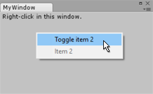

GenericMenu.AddDisabledItem
Parameters
| content | The GUIContent to display as a disabled menu item. |
Description 描述
Add a disabled item to the menu.
The example below shows a context menu with a disabled menu item that can be toggled on and off.

See Also: GenericMenu.AddItem, GenericMenu.AddSeparator.
// This example shows how to create a context menu inside a custom EditorWindow, // where the first menu item toggles whether the second menu item is enabled // or disabled.
using UnityEngine; using UnityEditor;
public class MyWindow : EditorWindow { [MenuItem("TestContextMenu/Open Window")] public static void Init() { var window = GetWindow(typeof(MyWindow)); window.position = new Rect(50, 50, 250, 60); window.Show(); }
bool item2enabled = false; public void Toggle() { item2enabled = !item2enabled; Debug.Log("item2enabled: " + item2enabled); }
public void Item2Callback() { Debug.Log("Item 2 Selected"); }
public void OnGUI() { Event evt = Event.current; Rect contextRect = new Rect(10, 10, 100, 100);
if (evt.type == EventType.ContextClick) { Vector2 mousePos = evt.mousePosition; if (contextRect.Contains(mousePos)) { // Now create the menu, add items and show it GenericMenu menu = new GenericMenu();
menu.AddItem(new GUIContent("Toggle item 2"), item2enabled, Toggle); if (item2enabled) { menu.AddItem(new GUIContent("Item 2"), false, Item2Callback); } else { menu.AddDisabledItem(new GUIContent("Item 2")); }
menu.ShowAsContext();
evt.Use(); } } } }
Parameters
| content | The GUIContent to display as a disabled menu item. | |
| on | Specifies whether to show that the item is currently activated (i.e. a tick next to the item in the menu). |
Description 描述
Add a disabled item to the menu.